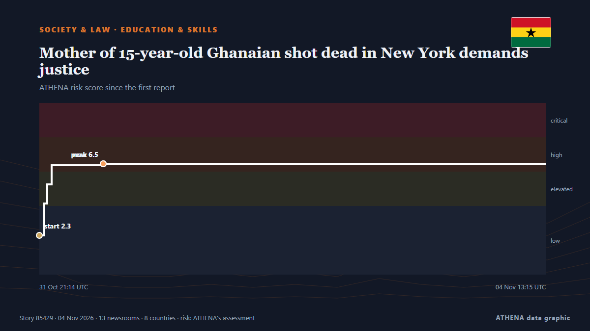

Mother of 15-year-old Ghanaian shot dead in New York demands justice

The mother of 15-year-old Ghanaian student Javits Frimpong, who was fatally shot while walking to school in New York, will be granted a visa to travel to the United States following an intervention… من MyJoyOnline
نشرته بشكل مستقل 13 مصدرًا في 8 دول منذ 31 أكتوبر، وأول من نشره Graphic Online؛ والتغطية لا تزال تتسع. يقدّر ATHENA الخطر بأنه مرتفع (6.1/10)، ويعود ذلك أساسًا إلى خطورة الضرر الموصوف ونطاقه الجغرافي والقطاعي. الثقة 86٪ (مرتفعة)، وعدد المصادر المستقلة المؤكِّدة: 13، بمتوسط موثوقية للمصادر يبلغ 73٪. وسائل الإعلام حسب البلد: غانا (14), نيجيريا (3), المملكة المتحدة (1). التغطية: من 31 أكتوبر إلى 4 نوفمبر، 88 ساعة.
لماذا يهم: تغيّر التعديلات القانونية والسياسية الحقوق والواجبات والخدمات العامة لمن تشملهم.
ما الذي تغيّر: 5 تقارير جديدة من 3 غرف أخبار خلال 24 ساعة حتى 4 نوفمبر.
العنوان الأول: NYC Mayor Mamdani secures Trump’s approval for visa for mother of slain Ghanaian teenager in Bronx
تُعرض العناوين بالإنجليزية كما نُشرت.
نظرة سريعة
اختير وقُيِّم وكُتب وفق منهجية ATHENA المنشورة. لا يتدخل أي محرر في الأحداث بعينها. كيف يُنتَج ›
| 31 Oct 20:51 UTC | 7 |
|---|---|
| 01 Nov 02:51 UTC | 6 |
| 01 Nov 08:51 UTC | 1 |
| 01 Nov 14:51 UTC | 0 |
| 01 Nov 20:51 UTC | 0 |
| 02 Nov 02:51 UTC | 1 |
| 02 Nov 08:51 UTC | 0 |
| 02 Nov 14:51 UTC | 1 |
| 02 Nov 20:51 UTC | 0 |
| 03 Nov 02:51 UTC | 3 |
| 03 Nov 08:51 UTC | 1 |
| 03 Nov 14:51 UTC | 0 |
| 03 Nov 20:51 UTC | 1 |
| 04 Nov 02:51 UTC | 1 |
| 04 Nov 08:51 UTC | 3 |
| 31 Oct 21:14 UTC | 2.3 |
|---|---|
| 31 Oct 22:07 UTC | 4.1 |
| 31 Oct 22:39 UTC | 5.2 |
| 31 Oct 23:25 UTC | 6.4 |
| 01 Nov 08:19 UTC | 6.5 |
| 04 Nov 13:15 UTC | 6.1 |
لماذا هذه الأرقام
الأهمية
الخطر
الثقة
التغطية — من نشر الخبر ومتى
العنوان كما نُشر · يفتح الأصل- Graphic Online · غاناTrump agrees to immediately grant emergency travel visa to Javits Frimpong's mother to mourn her son in person
- MyJoyOnline · غاناNew York City Mayor Mamdani secures Trump’s approval for visa for mother of slain Ghanaian teenager in Bronx
- MyJoyOnline · غاناGov’t to fund travel costs for mother of slain teenager to attend son’s funeral in New York
- The Independent · المملكة المتحدةMamdani says Trump agrees to grant visa to mother of Ghanian teen killed in Bronx shooting
- The Rio Times · البرازيلTrump Approves Visa for Ghanaian Teen’s Mom
- Anadolu Agency (English) · تركياTrump agrees to grant visa to mother of New York teen killed in shooting: New York City mayor
- Punch · نيجيرياTrump promises visa, police hunt Ghanaian teen’s killers
- DW English · ألمانياTrump grants visa to mother of Ghanaian boy killed in NYC — Mamdani
- GBC Ghana Online · غاناNew York City Mayor Mamdani secures Trump administration’s visa approval for mother of slain Ghanaian teenager
- Daily Trust · نيجيرياTrump intervenes as Ghana demands justice for teenager killed in US
- Vanguard · نيجيرياTrump intervenes as Ghana demands justice over killing of 15-year-old boy in US
- Al Jazeera English · قطرMamdani says Trump to grant visa to mother of boy killed in Bronx shooting
- The San Juan Daily Star · بورتوريكوMother of teen killed in the Bronx gets visa after Mamdani-Trump call
- MyJoyOnline · غاناForeign Affairs Ministry receives mother of Ghanaian teen killed in New York shooting
- MyJoyOnline · غاناGhana envoy expects US police to identify killers of teenager shot dead in New York
- MyJoyOnline · غاناBronx residents plan vigil for slain Ghanaian teenager amid calls to tackle youth violence
- GBC Ghana Online · غاناGhana’s Deputy Foreign Affairs Minister meets mother of Ghanaian teen killed in New York shooting
- Daily Guide Network · غاناEnil Honours Javits Frimpong With Artwork
- MyJoyOnline · غاناBawumia consoles family of slain Ghanaian teenager as NPP-USA New York Chapter demands justice
- MyJoyOnline · غاناAfua Asantewaa demands justice for Ghanaian teenager shot dead in New York
- MyJoyOnline · غاناMother seeks justice after 15-year-old Ghanaian son is shot dead in New York
- Graphic Online · غانا'I want justice': Mother of slain teen Javits Frimpong off to New York to bury son
- GBC Ghana Online · غاناMother of 15-year-old Ghanaian student shot dead in New York demands justice